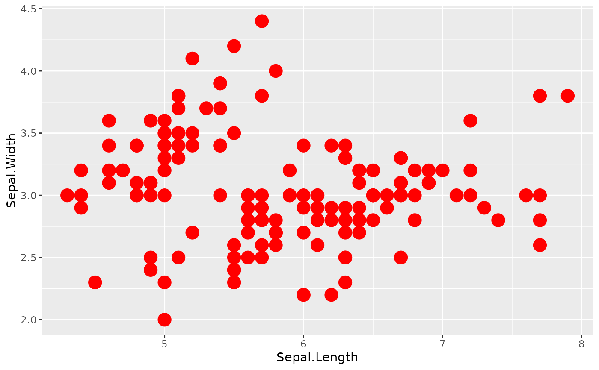
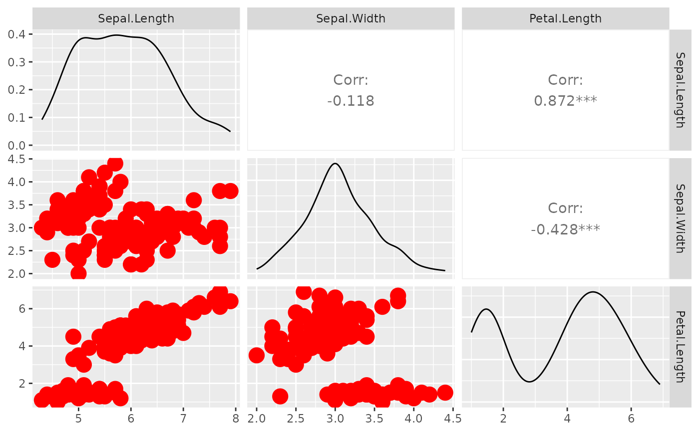

Wraps a function with the supplied parameters to force different default behavior. This is useful for functions that are supplied to ggpairs. It allows you to change the behavior of one function, rather than creating multiple functions with different parameter settings.
wrap_fn_with_param_arg(
funcVal,
params = NULL,
funcArgName = deparse(substitute(funcVal))
)
wrapp(funcVal, params = NULL, funcArgName = deparse(substitute(funcVal)))
wrap(funcVal, ..., funcArgName = deparse(substitute(funcVal)))
wrap_fn_with_params(funcVal, ..., funcArgName = deparse(substitute(funcVal)))Arguments
- funcVal
function that the
paramswill be applied to. The function should follow the api offunction(data, mapping, ...){}.funcValis allowed to be a string of one of theggally_NAMEfunctions, such as"points"forggally_pointsor"facetdensity"forggally_facetdensity.- params
named vector or list of parameters to be applied to the
funcVal- funcArgName
name of function to be displayed
- ...
named parameters to be supplied to
wrap_fn_with_param_arg
Value
a function(data, mapping, ...){} that will wrap the original function with the parameters applied as arguments
Details
wrap is identical to wrap_fn_with_params. These function take the new parameters as arguments.
wrapp is identical to wrap_fn_with_param_arg. These functions take the new parameters as a single list.
The params and fn attributes are there for debugging purposes. If either attribute is altered, the function must be re-wrapped to have the changes take effect.
Examples
# small function to display plots only if it's interactive
p_ <- GGally::print_if_interactive
# example function that prints 'val'
fn <- function(data, mapping, val = 2) {
print(val)
}
fn(data = NULL, mapping = NULL) # 2
#> [1] 2
# wrap function to change default value 'val' to 5 instead of 2
wrapped_fn1 <- wrap(fn, val = 5)
wrapped_fn1(data = NULL, mapping = NULL) # 5
#> [1] 5
# you may still supply regular values
wrapped_fn1(data = NULL, mapping = NULL, val = 3) # 3
#> [1] 3
# wrap function to change 'val' to 5 using the arg list
wrapped_fn2 <- wrap_fn_with_param_arg(fn, params = list(val = 5))
wrapped_fn2(data = NULL, mapping = NULL) # 5
#> [1] 5
# change parameter settings in ggpairs for a particular function
## Goal output:
regularPlot <- ggally_points(
iris,
ggplot2::aes(Sepal.Length, Sepal.Width),
size = 5, color = "red"
)
p_(regularPlot)

# Wrap ggally_points to have parameter values size = 5 and color = 'red'
w_ggally_points <- wrap(ggally_points, size = 5, color = "red")
wrappedPlot <- w_ggally_points(
iris,
ggplot2::aes(Sepal.Length, Sepal.Width)
)
p_(wrappedPlot)
# Double check the aes parameters are the same for the geom_point layer
identical(regularPlot$layers[[1]]$aes_params, wrappedPlot$layers[[1]]$aes_params)
#> [1] TRUE
# Use a wrapped function in ggpairs
pm <- ggpairs(iris, 1:3, lower = list(continuous = wrap(ggally_points, size = 5, color = "red")))
p_(pm)

pm <- ggpairs(iris, 1:3, lower = list(continuous = w_ggally_points))
p_(pm)